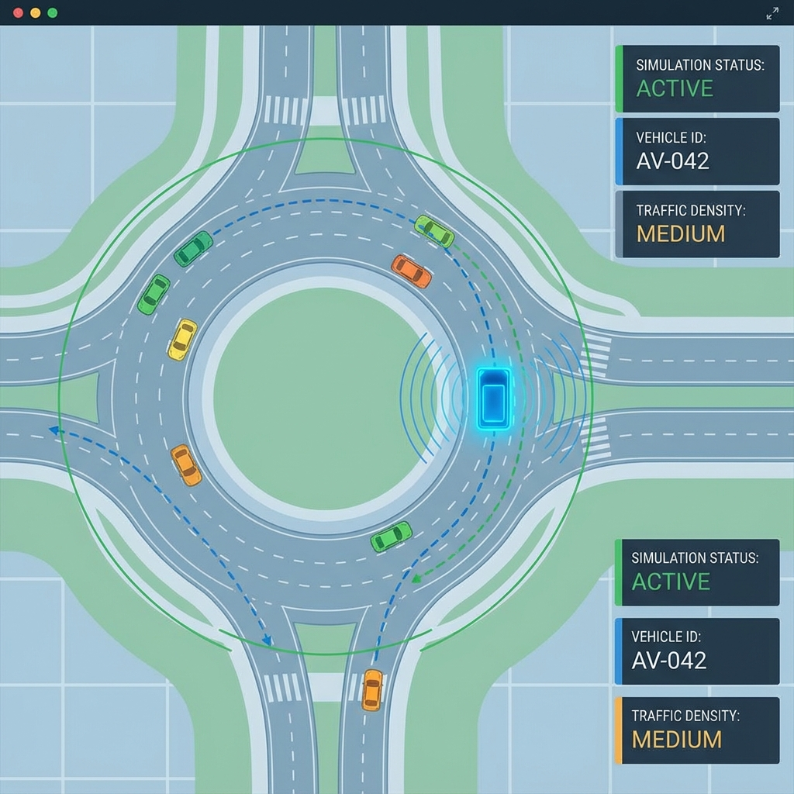
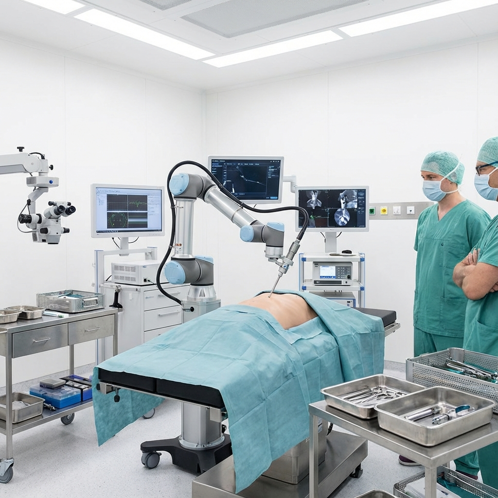
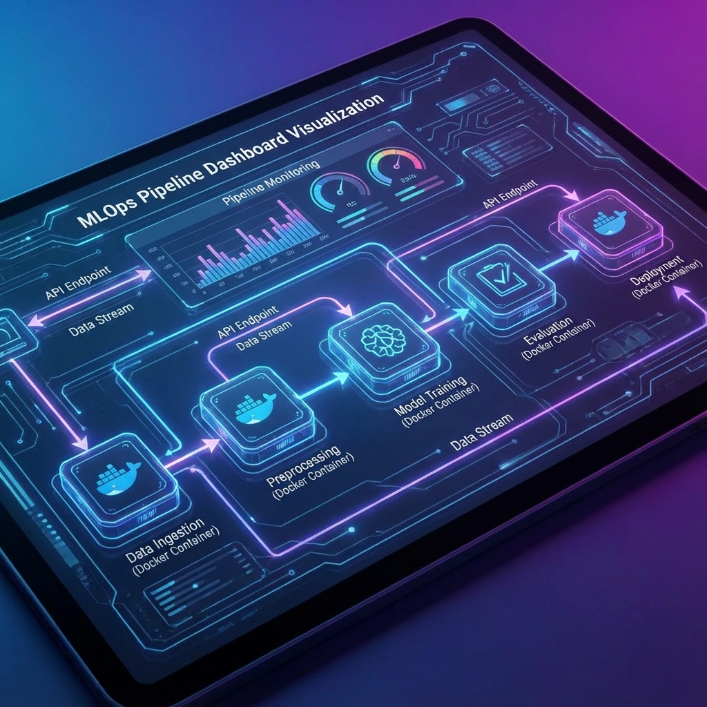
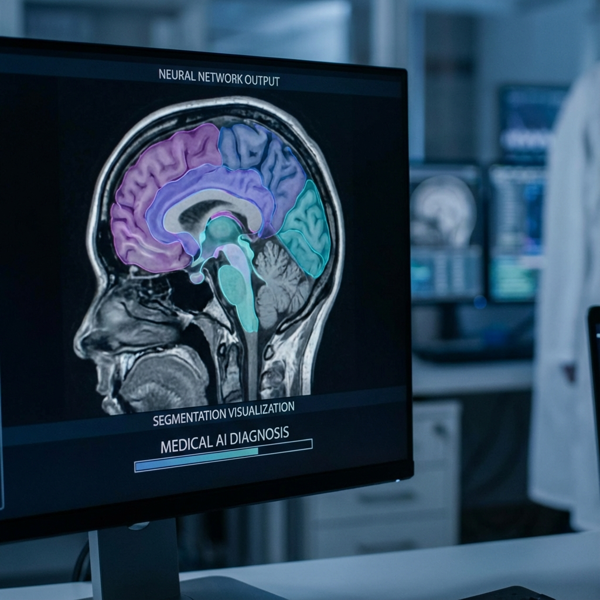

Projects
|
|

|
AV Roundabout Navigation
Developed a reinforcement learning agent for autonomous vehicle navigation in
complex roundabout scenarios using Tabular Q-Learning. Achieved 93.9%
success rate in multi-agent traffic environments.
Python, Gymnasium, PyTorch
Project Page /
GitHub
|
|
|

|
Surgical Robot LLM Control
Fine-tuned Qwen2.5-7B LLM to interpret natural language commands and control a
UR5e surgical robot arm. Achieved 97.77% accuracy with
0.618s latency for real-time text-to-trajectory translation.
ROS 2, Transformers, UR5e
Project Page /
GitHub
|
|
|

|
Air Quality MLOps Pipeline
Engineered a scalable MLOps pipeline for global air quality prediction with
R² = 0.939. Handles data ingestion, model training, and
real-time inference via Dockerized FastAPI deployment.
FastAPI, Docker, Scikit-learn
Project Page /
GitHub
|
|
|

|
MRI Segmentation Optimization
Optimized a deep learning pipeline for MRI image segmentation using custom
2D/3D CNN architectures. Achieved 30% faster inference while
maintaining medical imaging accuracy standards.
TensorFlow, CUDA, Medical Imaging
Project Page /
GitHub
|
|
Experience
|
|
Severn Trent Water — MCTI Intern
Wastewater Treatment Optimization: Led a 9-person team to implement Bayesian
optimization for wastewater treatment processes. Projected 20-30% OPEX savings through
AI-driven parameter tuning.
|
|
SB Marine — Engineering Intern
Engineering Automation: Automated CAD-to-BOM workflows using Excel macros and designed
marine components in Fusion 360, significantly reducing manual data entry time.
|
Technical Skills
|
|
Languages: Python, C++
Frameworks: PyTorch, TensorFlow, ROS 2, OpenCV
Tools: Docker, Git, Linux, Gazebo
Specializations: Reinforcement Learning, MLOps, LLM Fine-tuning
|
{kind=link}